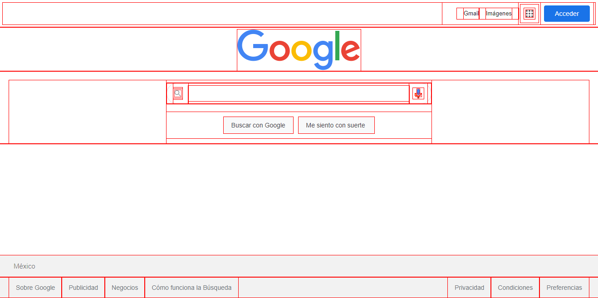

Box Model (modelo de caja)
El nombre 'box-model' (modelo de caja) se llama así porque, en los
navegadores, todo se construye a partir de cajas.
Entonces, lo primero que debemos de entender, es que cada elemento que
definimos en un documento HTML se mostrará en el navegador como una caja
rectangular. Esta es la forma en que se representan todos los elementos,
no existen elementos triangulares, redondos, poligonales, etc.
Todos los elementos en HTML por defecto son rectangulares ya que
internamente el navegador dibuja un rectángulo.
NOTA: Las únicas excepciones son las listas y las tablas, que generan más de una caja, y los elementos con “display: nono” o “display:contents”, que no crean ninguna caja.
Aunque se visualice en un sitio web algún elemento diseñado en CSS que
utiliza “border-radius” para parecer un círculo, ese elemento seguirá
siendo rectangular y esto es porque cada elemento del diseño web es una
caja, el navegador renderiza cada elemento de la página web como un
elemento rectangular y con CSS se definen las propiedades como el tamaño,
el color, los estilos, el margen y mucho más de estos elementos
rectangulares.
Esto se puede comprobar con el siguiente ejemplo, con ayuda de la
propiedad “outline”, se pueden ver todos los elementos de la pagina de
inicio de Google de forma rectangular y esto se puede hacer con cualquier
otro sitio web.

El navegador Microsoft Edge tiene una herramienta llamada 3D view que además de encontrar áreas de anidamiento profundo y ayudar a la depuración, también muestra todas las cajas contenedoras de forma visual en 3D. Es uno de los mejores ejemplos visuales para poder comprender el box model:

Como se menciono, cada elemento HTML en una página web es una caja. Sin embargo, se deben reconocer que hay dos tipos básicos de cajas:
- Cajas de Bloque (Block boxes).
- Cajas en línea (Inline boxes).
Estos dos tipos de cajas existieron desde el principio de la web:
Cajas de bloque (Block Boxes)
Las cajas de bloque, por defecto, ocupan todo el espacio a lo ancho del
contenedor. El elemento HTML común para una caja de bloque es el elemento <div>.
Cajas en línea (Inline Boxes)
Las cajas en línea, por defecto, toman el espacio según el contenido
envuelto. El elemento HTML más común para una caja en línea es el elemento
<span>. El comportamiento de todas las cajas proviene de la
propiedad display de CSS.
Las áreas del modelo de caja
Cada elemento HTML es una caja que tiene 4 lados y se compone de cuatro áreas:
Internos:
- Content
- padding
- border
Externos
- margin
Estas áreas se apilan para formar el modelo de caja o box model. Cada elemento HTML es una caja que podemos controlar en el espacio exterior con la propiedad margin, después, podemos darle un borde y con la propiedad padding, también podemos proporcionar los espacios interiores entre el contenido y el borde dentro de la caja.
Herramienta de Desarrollo (DevTools)
Si se necesita inspeccionar cada elemento HTML, En la herramienta de
desarrollador de cada navegador hay una pestaña llamada "Estilos" y lo que
hace es mostrar el modelo de caja.
- El content o contenido es representado por el color azul.
- El padding es representado por el color verde claro.
- El border es representado por un color amarillo.
- El margen es representado por un color naranja.

Al posicionarse en cada elemento HTML de la página web y seleccionarlo,
estos elementos se pintarán de los colores del ejemplo y esto ayuda a
detectar cuanto de padding o margin tiene cada elemento.
Content
El contenido de la caja, donde aparecen texto, imágenes, etc.
El área del content (como su nombre lo dice) es donde se encuentra el
“contenido” central a mostrar, es decir, un texto, una imagen, un video,
etc. El contenido siempre es lo que se quiere mostrar al usuario. Esta
área en muchas ocasiones tiene un color o imagen de fondo para hacerla más
atractiva.
Como se puede observar en la imagen, el contenido es el área central de
todo el elemento, de tal forma, que el siguiente elemento que lo rodea es
el padding. El tamaño de esta área se puede modificar con las propiedades
height, width, max-height, max-width, min-height, min-width.

Cuando se establece una anchura o una altura en un elemento, esto sólo se
aplica al área de contenido (content) de la caja, no a la caja completa.
El padding y border se añaden a la anchura y la altura para obtener el
tamaño total de la caja.
Padding
Es el área alrededor del contenido. El padding es transparente. El padding
es una separación o espacio interior que existe entre el contenido y el
borde de la caja, el cual se utiliza para dar una apariencia estética más
atractiva y que el contenido no este pegado al borde.
Cabe mencionar que el padding sigue siendo parte de la caja visible, por
lo que, si se tiene una imagen o color de fondo, este se extenderá a
través del padding. El padding está delimitado por el borde.
Se puede usar el mismo valor en toda la caja, por ejemplo, padding: 20px o
se puede dar padding sólo a un lado de la caja, por ejemplo,
padding-right: 10px.
Los valores pueden ser positivos o negativos.
Además, el shorthand padding permite dar un valor diferente a cada lado,
sin necesidad de escribirlos por separado.
Border
El borde es la línea que rodea la caja, es la frontera que rodea al
elemento, esta se utiliza para darle una apariencia estética a la caja,
pues permite dibujar una línea de algún color. La línea puede tener los
siguientes estilos:

Las tres propiedades básicas para crear bordes son:
- border-style: sus valores son solid, dashed y dotted.
- border-width: indica al navegador el tamaño del borde, normalmente, se utiliza el valor en píxeles para esta propiedad, por ejemplo, border-width: 5px.
- border-color: por defecto, el valor utiliza el currentColor del texto. Sin embargo, es preferible definirlo, aunque no sea necesario. Por ejemplo, border-color: red.
La mayoría de los desarrolladores web no utilizan estas tres propiedades
por separado. En su lugar, existe un shorthand: border. Con esta
propiedad, se puede escribir sólo border: solid 5px red.
Margin
Es la separación entre una caja y las cajas adyacentes.
El margen es la última área del Box Model y se puede ver como una
separación invisible o transparente que ayuda a separar un elemento de
otro. Cuando definimos un color o imagen de fondo, este no se propaga a
esta sección.
Los márgenes siempre quedan fuera del modelo de caja, por lo que pueden
utilizarse para crear espacio entre los elementos.
Los valores pueden ser positivos o negativos.
Outline
Outline es la línea que rodea a la caja entre el border y el margin. Se
utiliza para dibujar un contorno alrededor de un elemento. Un contorno es
una línea que se dibuja fuera de los bordes de un elemento. Se puede
utilizar con fines decorativos.
La propiedad outline no pertenece al modelo de caja sin embargo esta
propiedad es una decoración gráfica que hace que los elementos que ganan
el foco, que son por lo general los <input>, se coloren como con una
ligera aura que los rodea.
Las propiedades de outline son:
- outline-width
- outline-style
- outline-color
- outline-offset
Conclusiones:
- Cada elemento HTML en una pagina web es una caja rectangular.
- El contenido de la caja es donde aparecen texto, imágenes, etc.
- El padding es el área alrededor del contenido.
- El borde es una línea que rodea el padding y el content.
- El margin es la separación entre una caja y las cajas adyacentes.